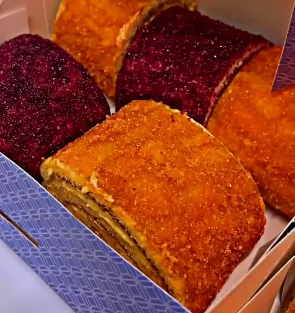
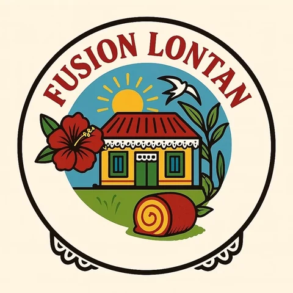
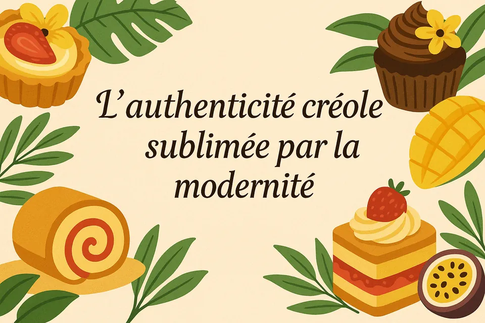
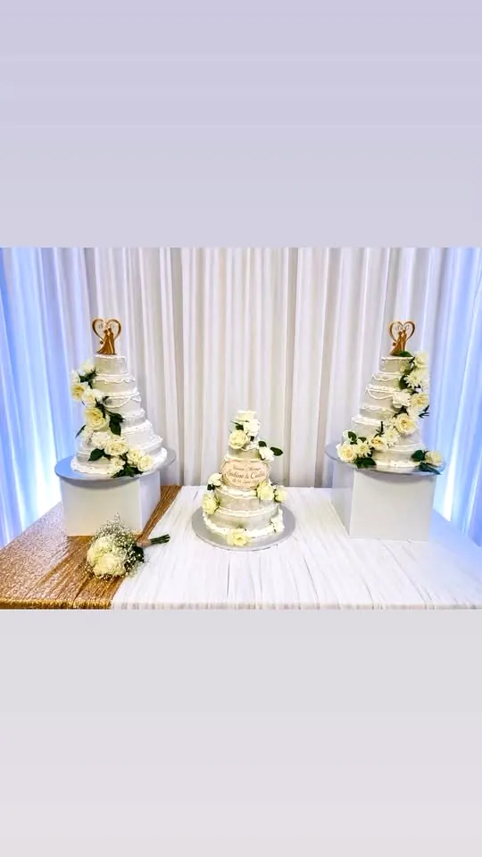
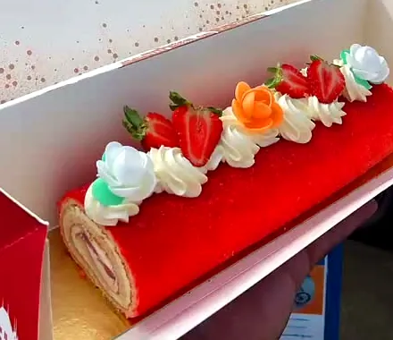
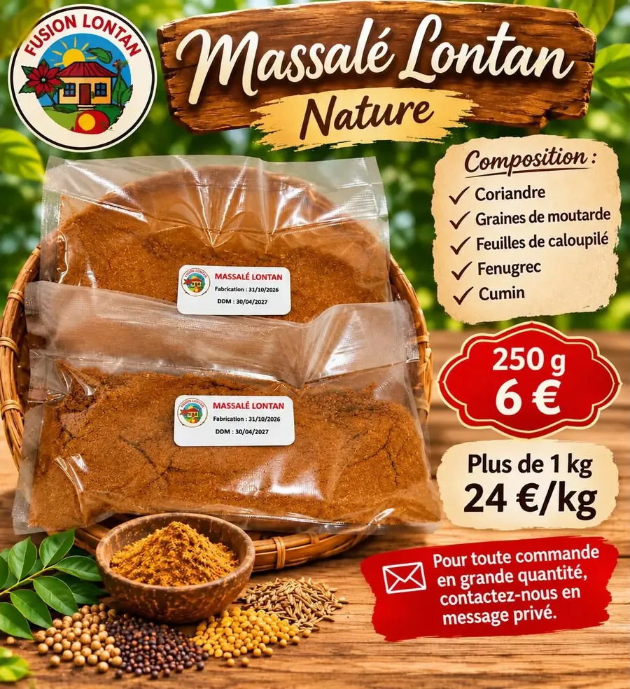
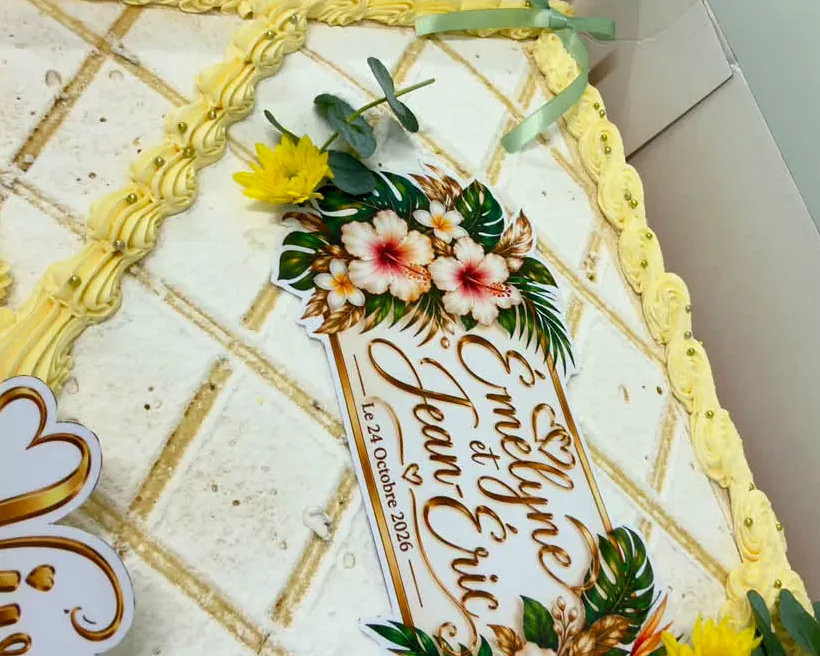
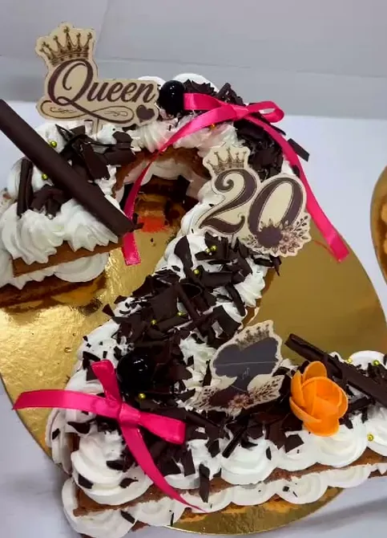
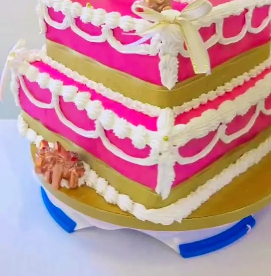
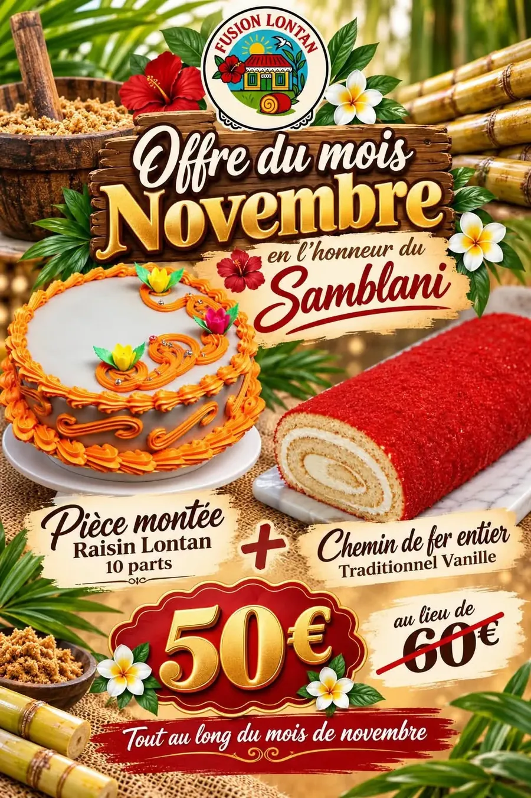

L'incontournable
Chemin de fer
« Un incontournable de la pâtisserie réunionnaise, moelleux et généreux », dont le traditionnel à la vanille.

Pâtisserie · Les Avirons · La RéunionTradition créole revisitée par un duo de passionnés : chemins de fer et douceurs artisanales.

« Le goût de nos traditions, le plaisir du partage. »
Aux Avirons, un duo de passionnés revisite la tradition créole : chemins de fer, pièce montée Lontan, Raisin Lontan… des pâtisseries « qui nous rappellent les douceurs de notre enfance ».
« Parce que nos traditions méritent d'être préservées et transmises de génération en génération, Fusion Lontan met à l'honneur les saveurs de notre patrimoine réunionnais. »
Réservations par message privé · livraisons possibles selon le secteur, en point relais.

« Un incontournable de la pâtisserie réunionnaise, moelleux et généreux », dont le traditionnel à la vanille.

Pour les mariages, baptêmes et fêtes de famille, souvent accompagnée de nos chemins de fer.

Mariages, baptêmes, fêtes de famille : des créations décorées, réalisées sur commande.

Mélange d'épices parfumé, sans piment, pour vos caris et plats mijotés. 250 g : 6 € · dès 1 kg : 24 €/kg.
Quelques créations publiées par Fusion Lontan sur sa page.



← faites glisser →
« C'est grâce à de belles collaborations que Fusion Lontan continue de grandir, petit à petit. »
Vente de gâteaux au Gymnase des Avirons, bénéfices reversés à l'association Papayes.
Une pièce montée Lontan accompagnée de nos chemins de fer, et le même jour, un 2ᵉ mariage venu de métropole.
Nos chemins de fer sont désormais à La Boutik Toucoula – La Relève, ZAC n°1 au Port.
« Un mélange d'épices parfumé, sans piment, qui rappelle la bonne cuisine lontan ! »

Une formule gourmande à partager en famille :
50 € au lieu de 60 €
Offre valable tout au long du mois de novembre 2026. Réservations par message privé.
Pour les tables de fin d'année, partagez le goût de nos traditions : un chemin de fer à poser au centre de la table, une pièce montée Lontan pour réunir la famille, ou un sachet de Massalé Lontan à glisser sous le sapin.
Contenu et disponibilités à confirmer directement avec Fusion Lontan.
Réservations par message privé ; livraisons en point relais, avec un supplément selon le secteur.